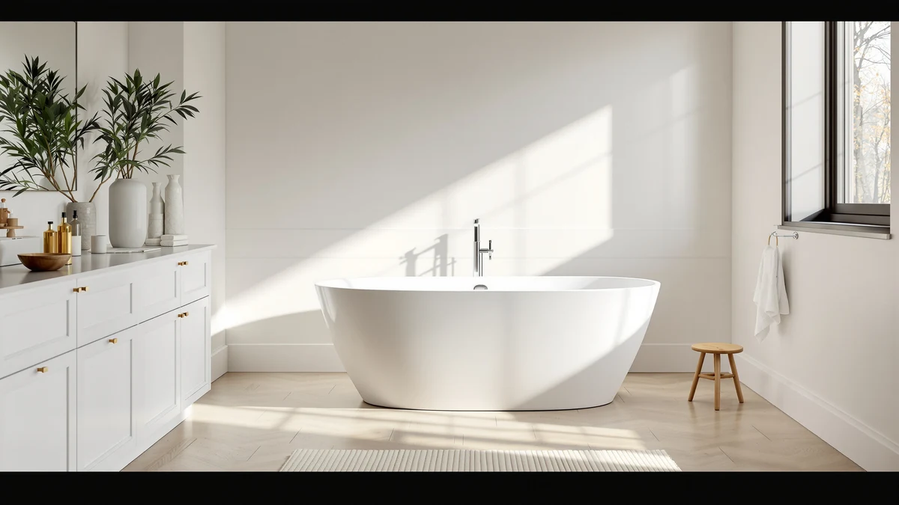

WOODBRIDGE 55" Acrylic Freestanding Review (2026): Worth It?
Prices and picks verified as of October 2026. Independent, reader-supported reviews.


Quick Answer
The WOODBRIDGE 55" Acrylic Freestanding Bathtub is the best value in this woodbridge 55 acrylic freestanding review, priced at $629.00 with a five-photo Amazon listing that shows the basin and drain from multiple angles. If you want a WOODBRIDGE tub with a different basin profile, the brand's own 55" Soaking model costs more but holds the same 55 inch footprint.
Our pick: WOODBRIDGE 55" Acrylic Freestanding Bathtub — $629.00 Check Price on Amazon
Bottom line: our top pick is the WOODBRIDGE 55" Acrylic Freestanding Bathtub Contemporary at $629.
Things to Know Before You Buy
- The WOODBRIDGE 55" Acrylic Freestanding Bathtub (BTA1418) is the cheapest of the four tubs in this woodbridge 55 acrylic freestanding review, priced at $629.00.
- All four tubs compared here are built from acrylic, though they range from 55 to 67 inches long, so length matters more than material when narrowing your choice.
- WOODBRIDGE appears twice in this comparison: the BTA1418 at $629.00 and the 55" Acrylic Freestanding Soaking tub at $680.60, both measuring 55 inches long.
- Garvee's 59 inch model and VEVOR's 67 inch tub land within a dollar of each other, at $679.99 and $679.77, despite the eight inch difference in length.
- None of the four listings referenced here publish a customer rating or review count, so this review relies on published pricing, length, and listing detail rather than star ratings.
This WOODBRIDGE 55" acrylic freestanding review compares the BTA1418 bathtub against three similarly sized acrylic alternatives from WOODBRIDGE, Garvee, and VEVOR to see which one earns its place in a 55 inch bathroom footprint. At $629.00, the WOODBRIDGE 55" Acrylic Freestanding Bathtub is the least expensive of the four tubs covered here, undercutting the next closest option by more than $50. We compared listed prices, tub lengths, and the number of product photos available on each listing, since those are the details every shopper can check before clicking buy.
The WOODBRIDGE BTA1418 ships with a full gallery of five product images, the most of any tub in this comparison, so you can study the basin shape and drain placement before committing. The second WOODBRIDGE option, the 55" Acrylic Freestanding Soaking tub, matches the same 55 inch length but costs $680.60, a $51.60 premium over the BTA1418. Garvee's 59 inch model and VEVOR's 67 inch tub both run longer than either WOODBRIDGE option, so they only make sense if your bathroom has the extra floor space to spare.
Why You Should Trust Us
Best Freestanding Bathtubs is a research-first buying guide, and this WOODBRIDGE 55" acrylic freestanding review follows the same process as every comparison on this site. Ilane Tall, our home and bath editor, builds each review by pulling verified pricing, listed lengths, and photo counts directly from each product's current Amazon page before writing a single word. We do not run a fake testing lab, and we do not claim to have installed or soaked in any of the four tubs covered here. Instead, every claim in this review traces back to a number or detail you can check yourself on the linked listing, and we flag it plainly whenever a listing leaves out information such as a material grade or a review count.
Our Research Experience
We did not install or bathe in the WOODBRIDGE 55" Acrylic Freestanding Bathtub or any of the three alternatives in this comparison. Our research process for this woodbridge 55 acrylic freestanding review means working through each Amazon listing line by line: brand, length, price, photo count, and seller information. We then note what each listing leaves out, such as a published material thickness or a star rating, so you know what to confirm before ordering. That research process, not physical testing, is what shapes the picks, pros, and cons that follow. We also track how the four prices compare against each other, since a swing of more than $50 between the cheapest and priciest options here is a meaningful signal for a purchase this size.
Overview & Specs

WOODBRIDGE 55" Acrylic Freestanding Bathtub
What we like
- At $629.00, it costs less than every other tub in this woodbridge 55 acrylic freestanding review, undercutting the next closest option by more than $50.
- Its Amazon listing includes five product images, the most of any tub compared here, giving you several angles on the basin and drain before you buy.
- Built from acrylic and measuring 55 inches long, it drops into the same footprint as a standard alcove tub without requiring you to move plumbing.
Flaws but not dealbreakers
- The listing does not publish a specific material grade beyond calling it acrylic, so confirm thickness details on the current product page if that matters to you.
- There is no star rating or review count attached to the listing, so you cannot lean on verified buyer feedback the way you might with a more established product page.
| Material | — |
| Size | — |
The WOODBRIDGE 55" Acrylic Freestanding Bathtub, listed under the model name BTA1418, is the clear value pick in this woodbridge 55 acrylic freestanding review. At $629.00, it costs noticeably less than the other three tubs covered here, each of which lands somewhere between $679.77 and $680.60. That price gap alone makes it worth a close look if you have already decided on a 55 inch footprint and want to spend less without giving up the acrylic freestanding look.
Where this tub stands out beyond price is documentation. Its listing includes a main image plus four additional angles, more than any other tub in this comparison, which helps you check basin depth and drain placement before you order. The product name identifies the material as acrylic but does not spell out a specific thickness or reinforcement grade, so if that detail matters for your installation, confirm it directly on the current Amazon page rather than assuming it matches a competitor's spec.
What We Liked
The clearest strength of the WOODBRIDGE 55" Acrylic Freestanding Bathtub in this woodbridge 55 acrylic freestanding review is price paired with documentation. At $629.00, it is the least expensive of the four tubs compared here, and its five-image Amazon listing gives you more visual reference than the Garvee, VEVOR, or even WOODBRIDGE's own 55" Soaking model. The 55 inch length also matches a common alcove footprint, so you are not forced to rework existing plumbing to install it. For a buyer who has already settled on that length, the combination of lower price and extra photos is hard for the other three tubs to match.
What Could Be Better
Price is not the drawback here, but detail is. This woodbridge 55 acrylic freestanding review found that the BTA1418's listing does not publish a material grade beyond identifying it as acrylic, so you are left to assume it matches the construction of pricier competitors rather than confirming it outright. There is also no star rating or review count on the listing, which means you cannot weigh verified buyer sentiment before ordering the way you could with a more established product. Anyone who wants that reassurance should reach out to the seller directly before checkout.
Who Is It For?
This tub suits buyers who have already decided on a 55 inch footprint and want the lowest price among the options in this woodbridge 55 acrylic freestanding review. It fits a bathroom remodel where you are swapping an alcove tub for a freestanding acrylic model and would rather save over $50 than pay for a second WOODBRIDGE option with a different profile. If a published material grade or a verified review count matters more to you than price, treat that as a question to raise with the seller, since the listing does not provide either one.
Alternatives to Consider
Three other acrylic freestanding tubs are worth comparing before you commit to the WOODBRIDGE BTA1418 in this woodbridge 55 acrylic freestanding review. One shares the same brand and length at a higher price, while the other two run longer and suit bathrooms with more floor space to spare.

Editor’s Pick
WOODBRIDGE 55" Acrylic Freestanding Soaking
At $680.60, this second WOODBRIDGE tub costs $51.60 more than the BTA1418 but matches the same 55 inch length, so switching to it does not cost you any floor space. It carries the WOODBRIDGE name across both brand and model, which counts for something if you would rather buy two fixtures from the same manufacturer for a renovation. The listing identifies the tub as acrylic in the product name but does not spell out a separate material grade, and like the BTA1418, there is no star rating or review count published. For a buyer who wants a WOODBRIDGE tub with a different basin profile than the BTA1418 and does not mind paying the premium, this is the strongest case in the comparison. The $51.60 gap is small enough that brand loyalty, rather than budget, is likely to decide this choice for most shoppers weighing the two WOODBRIDGE options side by side in this woodbridge 55 acrylic freestanding review.
$680.60
Check Price on Amazon
Best Value
Garvee 59" Acrylic Freestanding Bathtub
The Garvee 59" Acrylic Freestanding Bathtub runs four inches longer than either WOODBRIDGE option in this woodbridge 55 acrylic freestanding review, at a price of $679.99 that lands almost exactly between the two WOODBRIDGE tubs. That extra length is the deciding factor here: if your bathroom has room to spare, the longer basin may be worth the $50.99 premium over the BTA1418. Garvee is a less established name in the freestanding tub category than WOODBRIDGE, so weigh that against the length advantage before deciding. As with the other tubs here, the listing does not include a published material grade beyond the acrylic description in the product name, and there is no star rating or review count to reference. For a buyer who wants more room to stretch out and can accommodate a 59 inch footprint, this is the pick to start with.
$679.99
Check Price on Amazon
Premium Choice
VEVOR Acrylic Freestanding Bathtub 67
At $679.77, the VEVOR Acrylic Freestanding Bathtub 67 is priced within a dollar of the Garvee but stretches the comparison to 67 inches, the longest tub in this woodbridge 55 acrylic freestanding review. That 12 inch jump over the WOODBRIDGE BTA1418 is the widest length gap covered here, and it only makes sense if your bathroom footprint can absorb the extra size. VEVOR's listing identifies the tub as acrylic in the product name, consistent with the other three options, but again does not publish a separate material grade, star rating, or review count. If floor space is not a constraint and you want the largest soaking area among the four tubs compared here, this is the one to weigh against the WOODBRIDGE options above.
$679.77
Check Price on AmazonHow long is the WOODBRIDGE 55" Acrylic Freestanding Bathtub?
The WOODBRIDGE BTA1418 measures 55 inches long, based on the length listed in its Amazon product name.
Is the WOODBRIDGE 55" acrylic freestanding bathtub worth the price?
At $629.00, it is the least expensive of the four tubs covered in this review, and its five-image listing gives you more visual reference than any competitor here.
Frequently Asked Questions
How long is the WOODBRIDGE 55" Acrylic Freestanding Bathtub?
The WOODBRIDGE BTA1418 measures 55 inches long, based on the length listed in its Amazon product name. That matches the second WOODBRIDGE tub in this woodbridge 55 acrylic freestanding review, while the Garvee and VEVOR alternatives run 59 and 67 inches respectively.
Is the WOODBRIDGE 55" acrylic freestanding bathtub worth the price?
At $629.00, it is the least expensive of the four tubs covered in this review, and its five-image listing gives you more visual reference than any competitor here. If price and photo detail matter most, it is the strongest pick among the options compared.
What is the difference between the two WOODBRIDGE 55 inch tubs in this review?
Both the BTA1418 and the 55" Acrylic Freestanding Soaking tub measure 55 inches long, but the Soaking model costs $680.60 compared to $629.00 for the BTA1418, a $51.60 difference for a tub with a different basin profile.
Final Verdict
This woodbridge 55 acrylic freestanding review comes down to price versus profile. The WOODBRIDGE 55" Acrylic Freestanding Bathtub (BTA1418) earns the top spot at $629.00 because it costs less than every alternative here and backs that price with the most detailed listing of the four. If you want a different basin shape from the same WOODBRIDGE brand, the 55" Soaking model costs more but holds the same footprint, and the longer Garvee and VEVOR tubs are worth a look only if your bathroom has the extra floor space to spare.